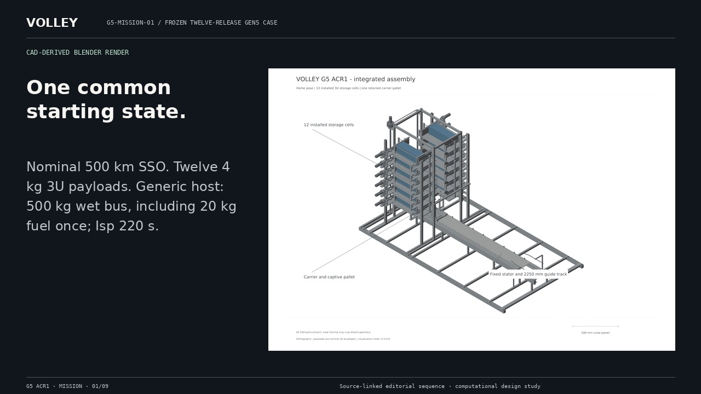
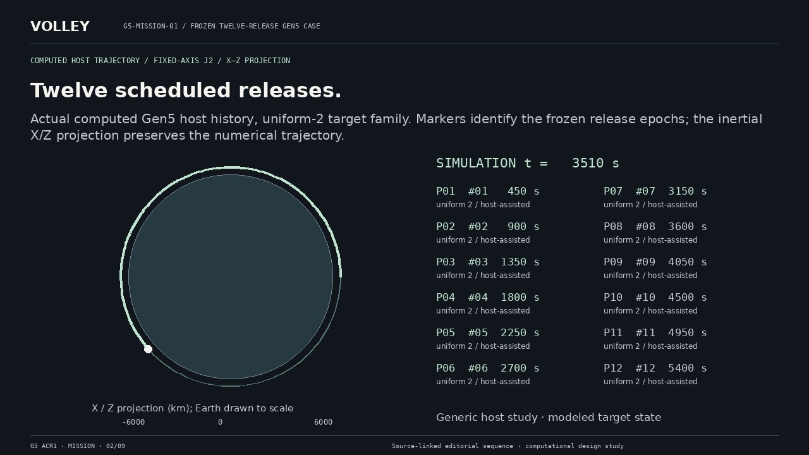
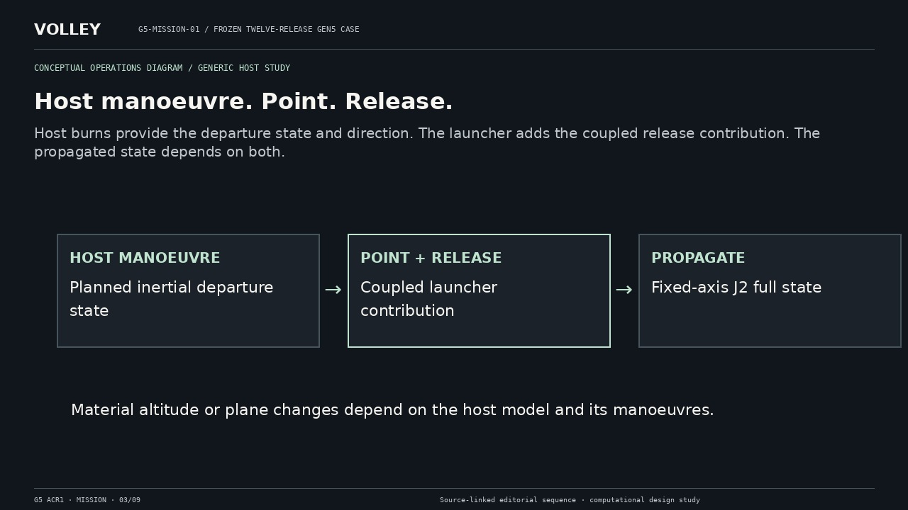
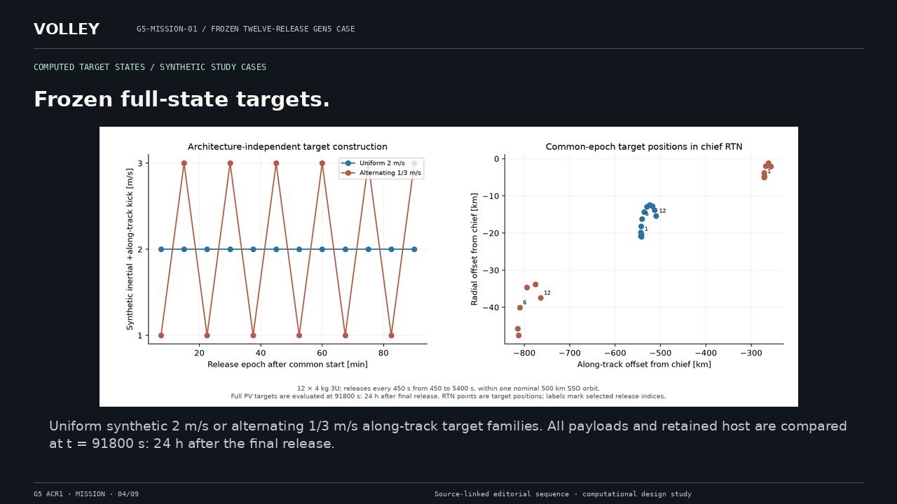
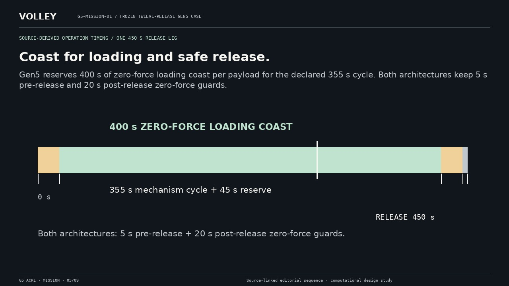
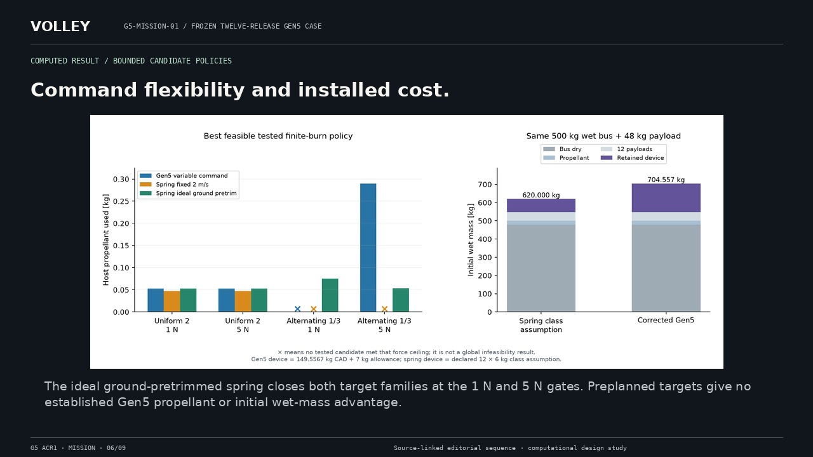
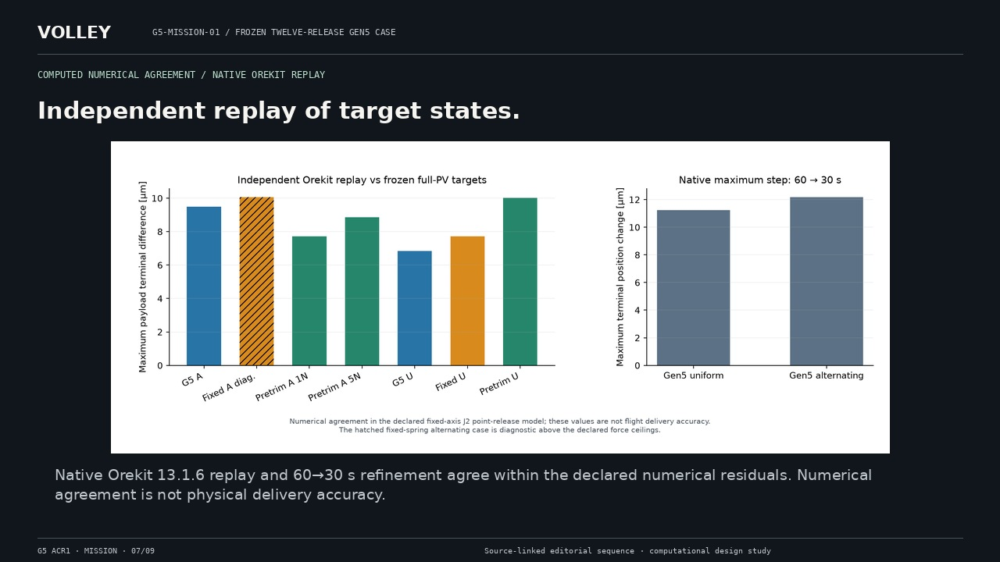
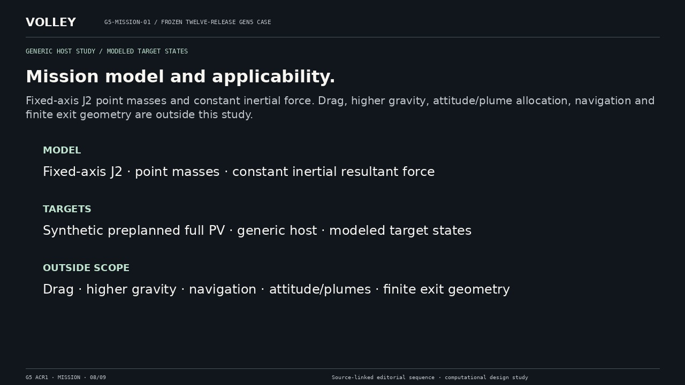
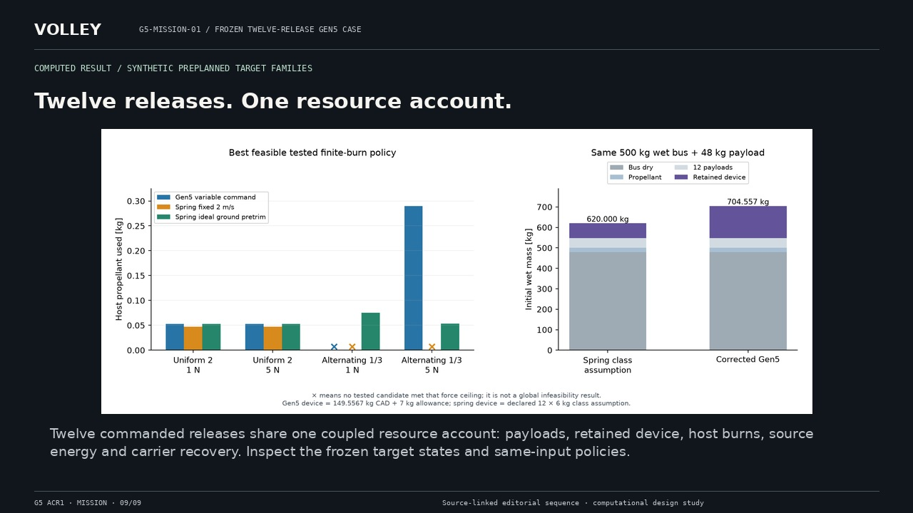

A host-assisted delivery study.
A complete still alternative to video. The original full-resolution scientific figures and CAD view provenance remain available in the asset register.
Return to film · Read complete transcript


Nominal 500 km SSO. Twelve 4 kg 3U payloads. Generic host: 500 kg wet bus, including 20 kg fuel once; Isp 220 s.
CAD-derived Blender render

Actual computed Gen5 host history, uniform-2 target family. Markers identify the frozen release epochs; the inertial X/Z projection preserves the numerical trajectory.
Computed host trajectory / fixed-axis J2 / X–Z projection

Host burns provide the departure state and direction. The launcher adds the coupled release contribution. The propagated state depends on both.
Conceptual operations diagram / generic host study

Uniform synthetic 2 m/s or alternating 1/3 m/s along-track target families. All payloads and retained host are compared at t = 91800 s: 24 h after the final release.
Computed target states / synthetic study cases

Gen5 reserves 400 s of zero-force loading coast per payload for the declared 355 s cycle. Both architectures keep 5 s pre-release and 20 s post-release zero-force guards.
Source-derived operation timing / one 450 s release leg

The ideal ground-pretrimmed spring closes both target families at the 1 N and 5 N gates. Preplanned targets give no established Gen5 propellant or initial wet-mass advantage.
Computed result / bounded candidate policies

Native Orekit 13.1.6 replay and 60→30 s refinement agree within the declared numerical residuals. Numerical agreement is not physical delivery accuracy.
Computed numerical agreement / native Orekit replay

Fixed-axis J2 point masses and constant inertial force. Drag, higher gravity, attitude/plume allocation, navigation and finite exit geometry are outside this study.
Generic host study / modeled target states

Twelve commanded releases share one coupled resource account: payloads, retained device, host burns, source energy and carrier recovery. Inspect the frozen target states and same-input policies.
Computed result / synthetic preplanned target families